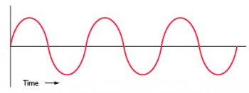
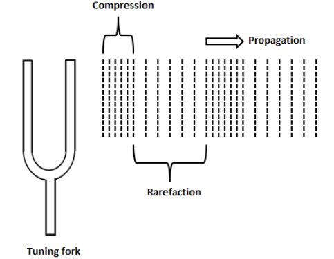

Sound are vibrations (to and fro or back and forth motion of an object) that travel through the air or another medium and can be heard when they reach a person's or animal's ear. The medium in which it propagates (travels) can either be a solid,
a liquid or a gas. Sound travels fastest in solids, relatively slower in liquids and slowest in gases.
What is a sound wave?

A wave is some disturbance caused when energy is traveling from one object to another. When sound travels, it moves the air around it, creating high and low pressure points, or waves.
Your ears can detect the waves, and you recieve this as sound.
Propagation of Sound

When a object moves "backwards and forwards" (to and fro motion) rapidly, we can say that the object "vibrates" or that the object is "vibrating". Sound is produces when an object vibrates (moves to and fro rapidly). When an object vibrates and makes sound, then the air around it also starts vibrating in the similar way and carries it to our ears through the vibration of its molecules. We call this as "Propagation of sound". It is not like the virating particles are always seperate apart or always close to each other. There are regions where these particles lie close to each other and regions where they lie apart from each other. The places where they lie close to each other are called compressions whereas the places they lie away from each other are called rarefactions.
Note:
Please note that if you click on words which are in italic and bold style while viewing this website, then it will take you to the meaning of that word for your reference.